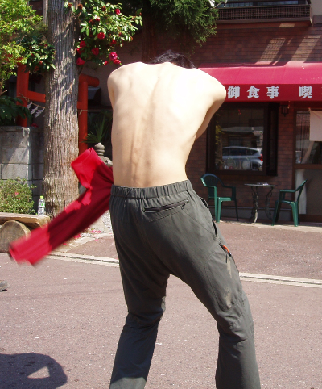
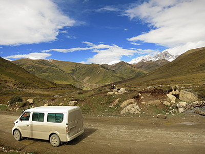

Members

一山 智弘
- 趣味
- Guns N'Roses
- 苦手な野菜
- 藪人参
- 行ってみたい駅
- 藪神
- ワンゲルで一番つらかったこと
- 起床係
- ワンゲルで学んだこと
- 無限等比級数を利用した米の七等分法
- 仲の良い妖精
- ドビー
- 尊敬するインド人
- ガンジー
- 一言
- Welcome to the Jungle...
大橋 宗史
- 好きな山行
- 山スキー
- 嫌いな山行
- ピストン
- 好きな人
- 山行にかかった費用の割り勘する仕事が早い人
- 嫌いな人
- 下山後の着替えを持って来ない人
- 欲しいもの
- 無線機

高市 雄太
- 好きなこと
- 祭とか花火を見に行ったり参加すること
- やってみたいこと
- 日本中を自転車で巡る、狩猟
- 行ってみたいところ
- 宇宙
- 今年の目標
- しし神様を見つける
- 納得いかないこと
- 自分の企画はいつも天災に脅かされてること
- ひと言
- やっぱり愛媛松山はいい町だと知りました
高辻 奏
- 好きな山行
- 晴れた山頂でコーヒーを飲む。
- 心に響いた漫画
- めぞん一刻
- 楽しかった山
- 夏合宿南ア悪沢岳:
- 闇を感じた山
- デポ山行聖隊、上高地研修
- ワンゲルで学んだこと
- 耐えていればすべて過ぎ去ること、テントの外で寝るという発想
- 今年の目標
- ワンゲル的思考から己を守る
- ひと言
- まいったね


陳 立峻
- 趣味
- 睡眠
- 好きな登山形態
- 山スキー以外なら何でも
- いずれ行きたいところ
- 海谷不動川、薬師見平
- 21歳の目標
- 厳冬期3000m一人旅
- 将来の夢
- 生計を立てる
- ひと言
- 痩せたい
豊島 理史
- 好きなこと
- 沢登り、海外旅行
- 行きたいところ
- 黒部源流、剣岳北方稜線、ヒマラヤ
- ワンゲルの良い所
- 変な奴が立峻しかいないこと。
- ワンゲルの悪い所
- 部員に蔓延するドM病。下級生が俺にだけ生意気なこと。
- ひとこと
- 道Lが欲しいよう


廣長 啓太
- 行ってみたいところ
- 日本各地の沢、厳しい藪
- 思い出の山行
- 和賀合宿
- 嫌いなヤツ
- ネズミ
- 目標
- 山と勉強の両立
- ひと言
- 今年は冬山にたくさんいきたいな
村瀬 唯斗
- 好きな山行スタイル
- 3、4泊程度の軽めの縦走 or 山スキー
- 愛着のある山
- 六甲山
- 将来の夢
- ホワイトな生活
- 好きなゲーム
- Minecraft
- ひと言
- 鳩貝は早いとこ自己紹介を書いておくれ


茂木 聖
- 趣味
- 古墳巡り、寺社巡り、友達の家に夕飯をたかりに行くこと
- 好きな教官
- 火曜５限、比較地域史の鈴木直志先生
- 行ってみたいところ
- 大仙古墳
- やってみたいこと
- 理系トークにまぜてもらうこと
- 今年の目標
- 下宿に巣くう害虫たちとの共存共栄
- ひと言
- 一緒に群馬ネタまたは文系トークで盛り上がってくれる方、募集してます。